2021年11月6日 旧名栗村～山伏峠・正丸峠～飯能 自転車ツーリング
2010年代初頭以降、しばらく自転車旅行から離れていたのだが、なんとなくロードバイクで名栗村に行ってみたときの写真。
当時、都内に住んでいて自走で飯能へ。そこから県道を名栗方面へ。勝手知ったる道なので地図は不要である。
名栗川橋
さて、いきなり名栗に着いてからの写真。名栗川橋という歴史ある橋。
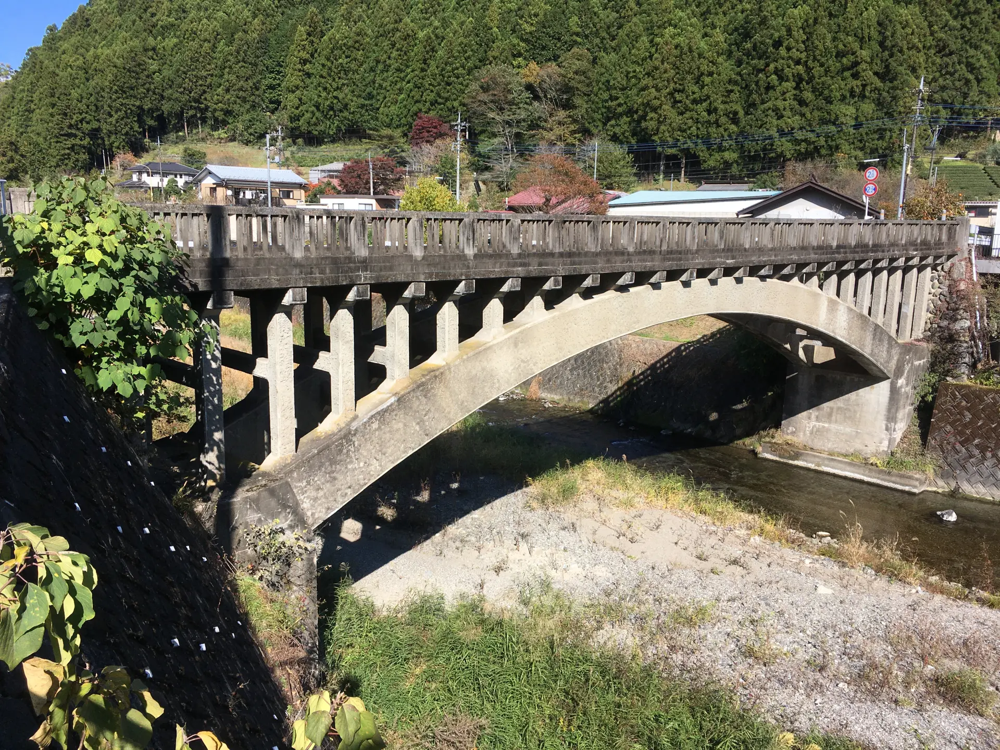 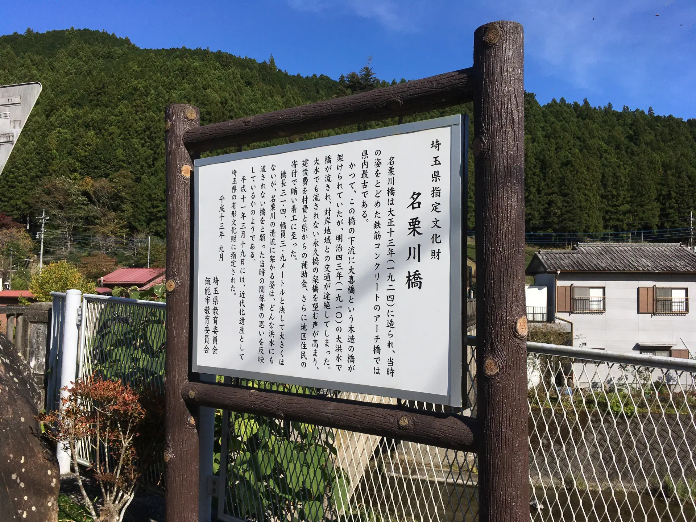このあたりは高校生や大学生の頃に数えきれないほど走ったが、こういう橋があることをまったく気にしていなかった。自分も若かったし、いまよりもこういうものへの注目度が低かったのかもしれない。現役のものよりも、消えようとしていた廃墟や廃道に惹かれていた。
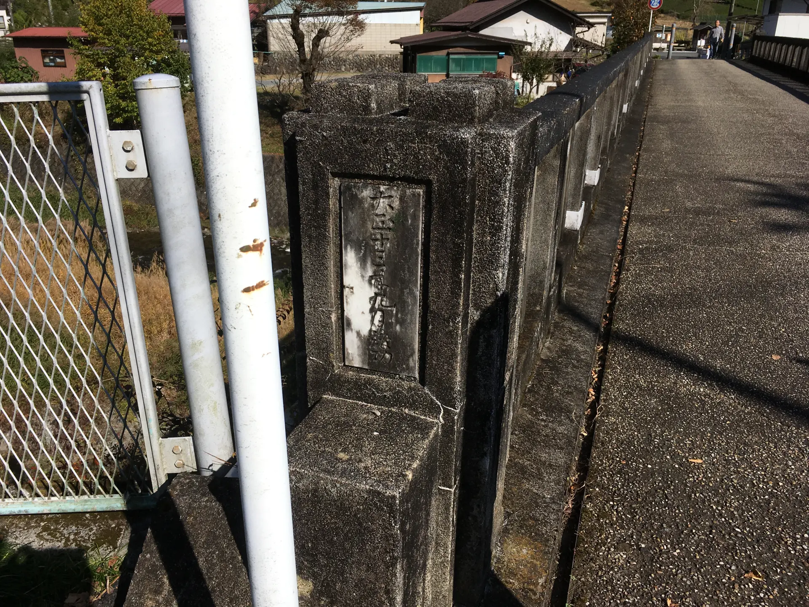 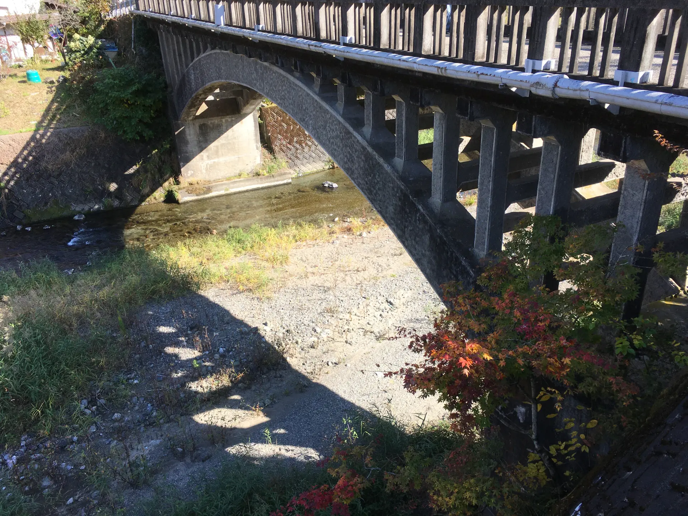星宮神社
そして、自転車で走っていて見かけた、まるでフィクションから飛び出てきたような神社。しかも名前が「星宮神社」。
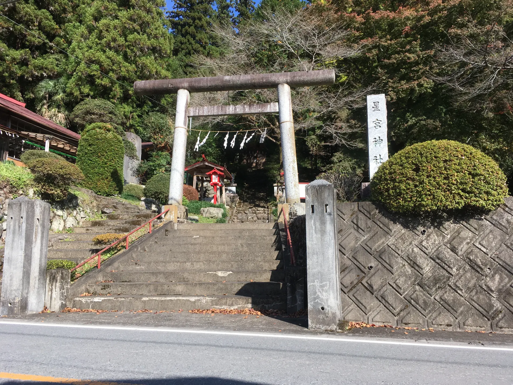 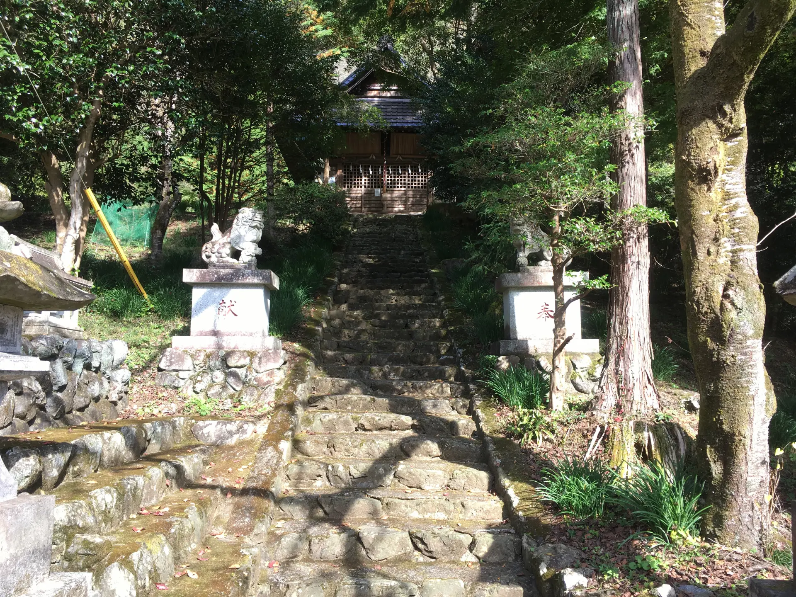こんな空間を独り占めできる。
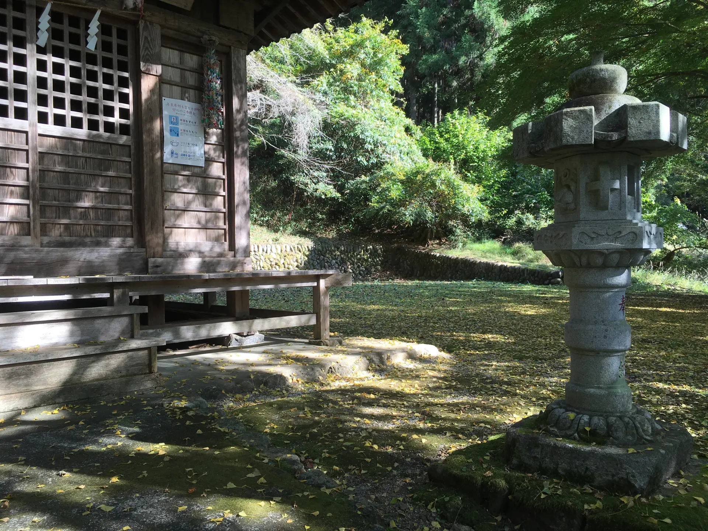 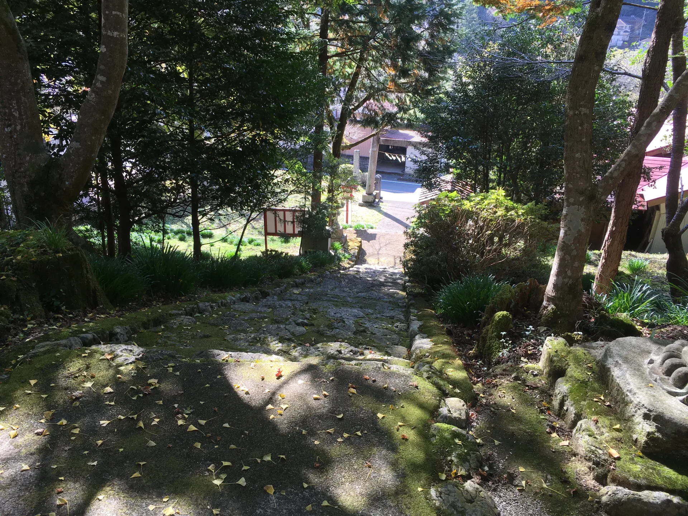この神社の写真はフィルムでもかなり撮影している。こちらの記事に写真を掲載している。
上海申光400 中国製カラーネガフィルム使ってみた Shanghai Light Colour Film 400 – 御部スクラ バーチャルYouTuber
名郷
そして、名栗の最奥に近い「名郷」の集落。この先もバス停は少しあるが、ほとんどのバスはここで終点。ここから本格的に山伏峠への登りにかかる。右へ行くと山伏峠で、左は鳥首峠や妻坂峠への道。鳥首峠の手前の白岩廃村には何度か行ったことがあるのだが、じつは鳥首峠も妻坂峠も、一度も越えたことがない。高校生の頃に越えておけばよかったのだが。
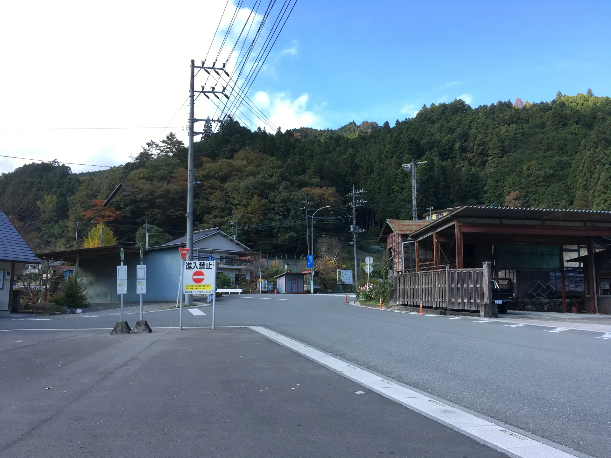このとき乗っていたのは知人から買ったFELTのロードバイクで、とくにコンポなどのこだわりはなかった。単に、乗れればよいというだけ。この自転車はその後安く手放してしまった。
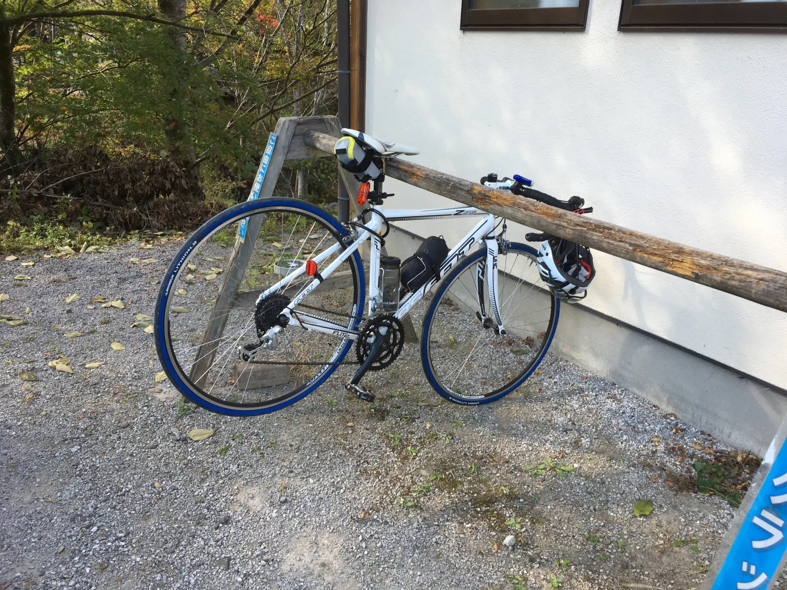山伏峠
次の写真は山伏峠になる。

となるとさも簡単に上ったようにも見えるのだが、身体がなまりきっていて、はっきりいってまともに上ることができなかった。34-27か28Tだったと思うのだが、それでもとにかく重すぎた。山伏峠なんてたったの標高800しかない峠で、高校や大学の頃は峠の内に数えていなかったのだが、運動していないとこうもダメなのかと思った。何度も足をついてしまった。一時期肉体労働をしていたことがあり、その頃は自転車もかなり乗れていたのだが、この頃はまったく運動していなかった。
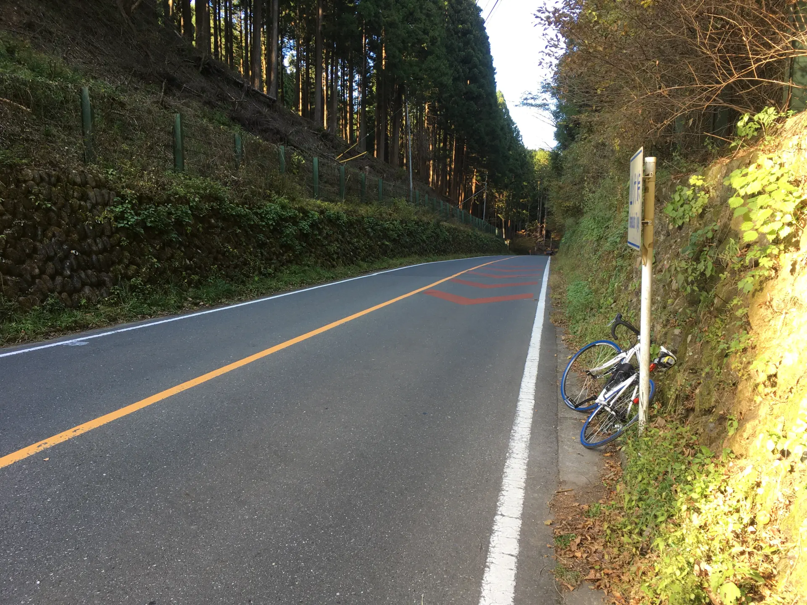正丸峠
山伏峠とセットの峠、正丸峠。標高はほぼ同じなのでまったく登らない。
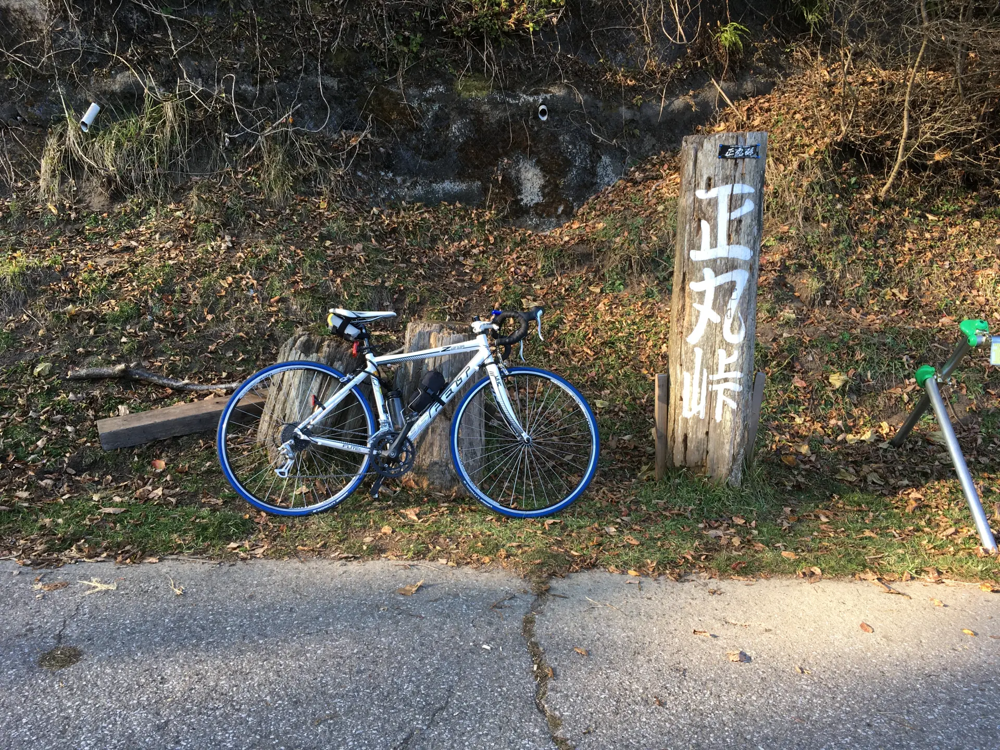正丸峠の下りの途中から。こんなに見晴らしがいいところがあることをそれまで知らなかった。
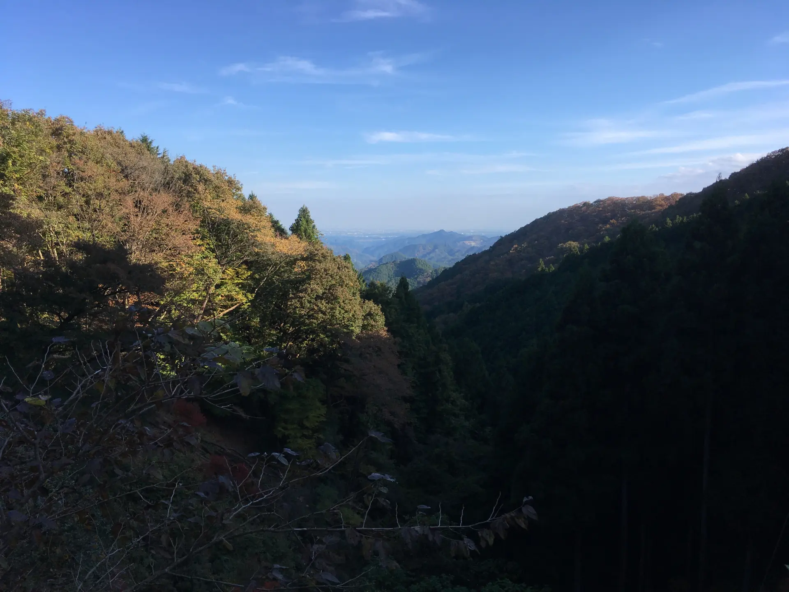正丸トンネルまで下ってきた。正丸駅から輪行してもよかったのだが、結局だらだらと飯能まで国道299号を下ってしまった。しかし国道299号は狭くて自転車は邪魔になるので走るものではないことを思い知った。迂回路もない。
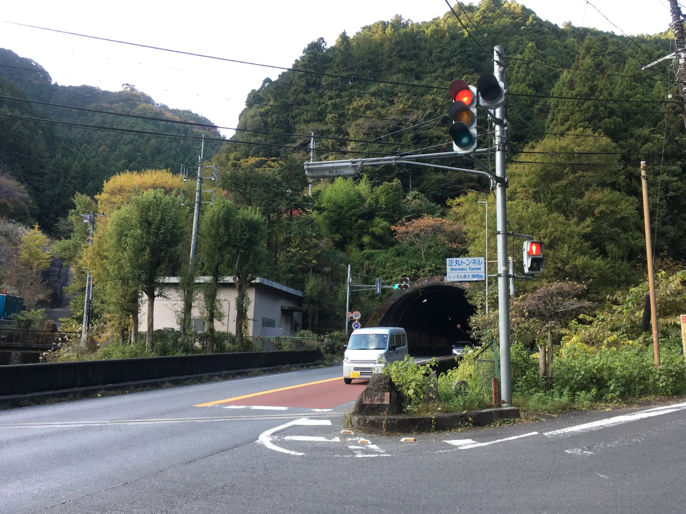高麗から電車に乗ろうかとも思ったのだが、どうせ飯能で乗り換えになるので飯能まで行った。
おしまい。
2025年12月17日記事公開